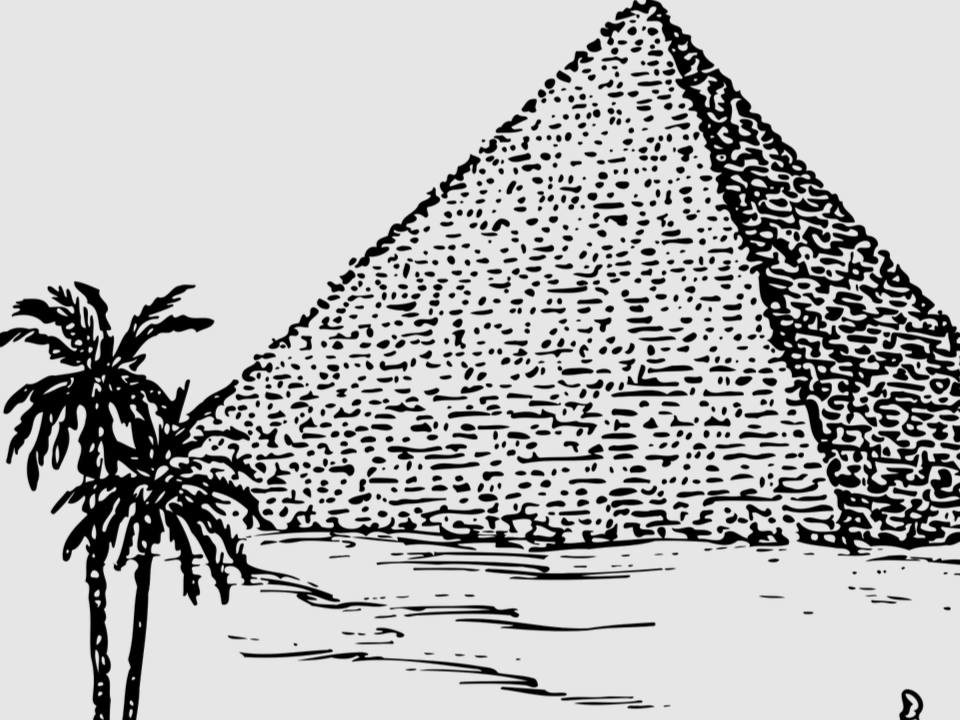
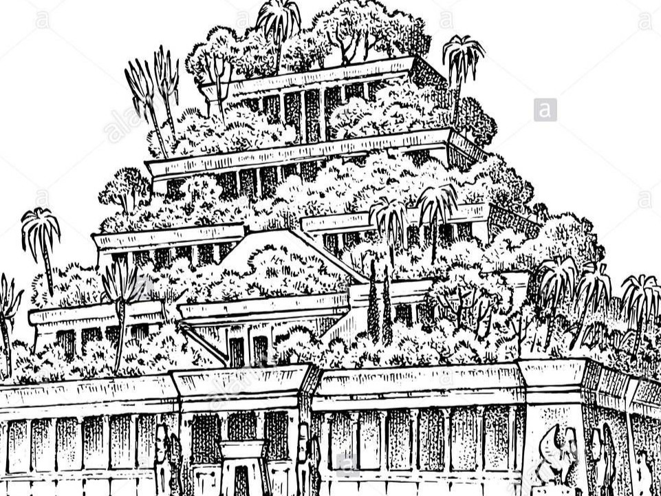
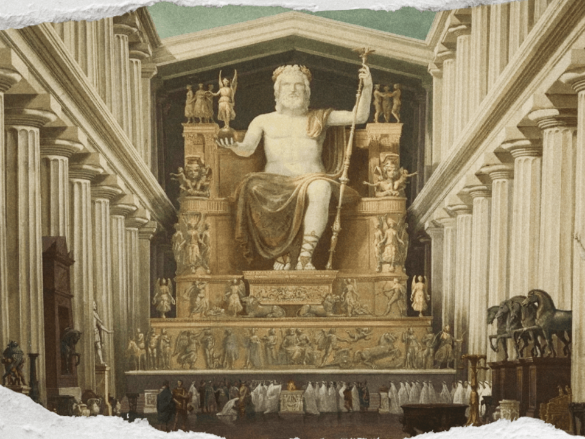
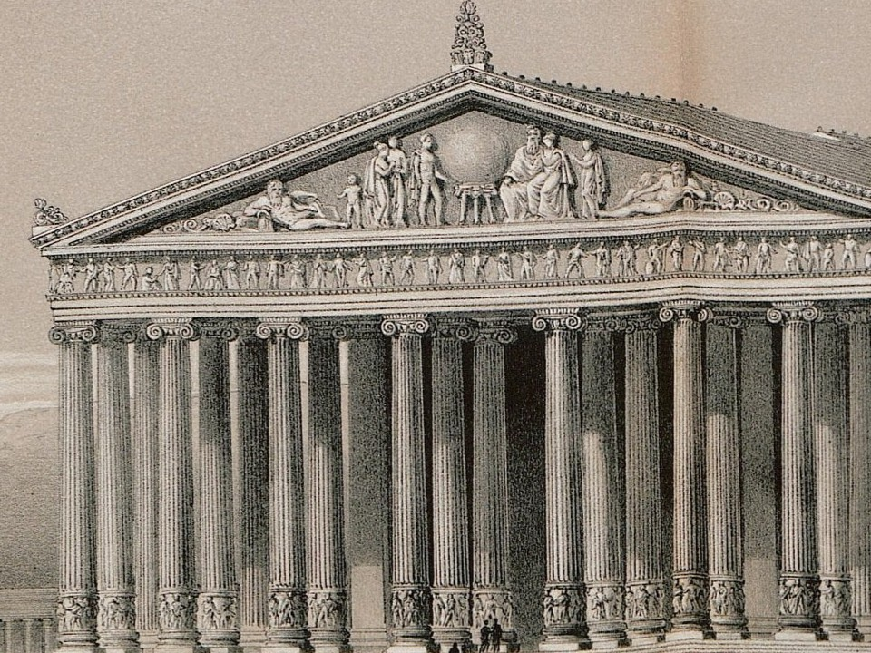
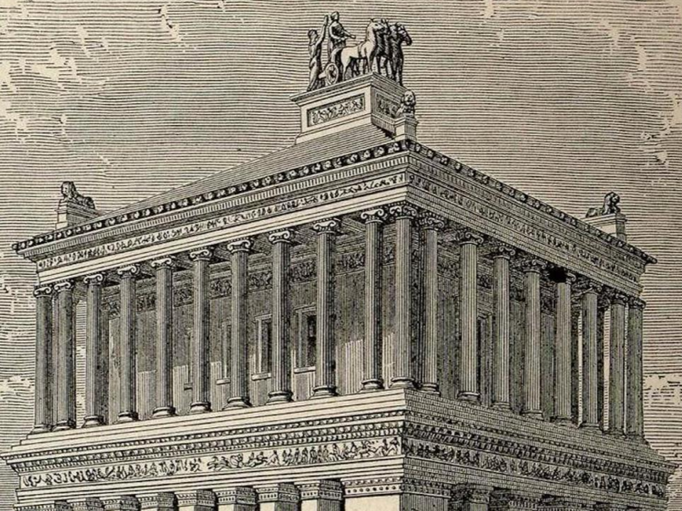

Семь древних чудес света
Список семи чудес древнего мира — это перечень выдающихся архитектурных и художественных достижений античности. Эти памятники, созданные в разные века, считались вершиной инженерной мысли и искусства своего времени, поражая современников своим масштабом и красотой.
Пирамида Хеопса
Единственное чудо, сохранившееся до наших дней.
Была построена как гробница для фараона Хеопса около 2560 года до н.э.
Это монументальное сооружение демонстрирует невероятное инженерное мастерство древних египтян.
- Сохранность: Единственное уцелевшее чудо.
- Назначение: Гробница фараона.
- Высота: Изначально 146.6 м.
Висячие сады Семирамиды
Легендарные сады, предположительно построенные в Вавилоне царём Навуходоносором II для своей жены.
Сады представляли собой сложную многоуровневую конструкцию с искусственной системой орошения.
- Местоположение: Вавилон (Ирак).
- Назначение: Подарок для царицы.
Статуя Зевса в Олимпии
Огромная статуя верховного бога греков, созданная скульптором Фидием из золота и слоновой кости.
Находилась в храме Зевса в Олимпии и поражала современников своим величием.
- Создатель: Скульптор Фидий.
- Место: Олимпия, Греция.
- Материал: Золото и слоновая кость.
Храм Артемиды в Эфесе
Грандиозный мраморный храм, посвящённый богине Артемиде.
Был известен своими огромными размерами и 127 колоннами.
Храм несколько раз разрушали и восстанавливали.
- Место: Эфес (Турция).
- Особенность: 127 мраморных колонн.
- Факт: Сожжён Геростратом.
Мавзолей в Галикарнасе
Величественная гробница для правителя Мавсола и его жены.
Сочетал в себе разные архитектурные стили и был так знаменит, что дал название всем крупным усыпальницам — «мавзолей».
- Назначение: Гробница царя Мавсола.
- Место: Галикарнас (Турция).
Колосс Родосский
Гигантская бронзовая статуя бога Гелиоса, стоявшая в гавани Родоса.
Была одним из самых высоких сооружений своего времени, но простояла всего около 54 лет, разрушившись от землетрясения.
- Место: Родос, Греция.
- Высота: Около 33 метров.
- Судьба: Разрушен землетрясением.
Александрийский маяк
Один из самых высоких маяков в истории, построенный на острове Фарос.
Его свет, усиленный системой зеркал, был виден далеко в море.
Простоял почти тысячу лет.
- Место: Александрия, Египет.
- Высота: Около 120-140 метров.
Судьба древних чудес света
| Чудо | Дата создания | Дата разрушения | Причина разрушения |
|---|---|---|---|
| Пирамида Хеопса | Ок. 2560 г. до н.э. | Сохранилась | Единственное уцелевшее чудо. |
| Висячие сады Семирамиды | Предп. VI в. до н.э. | Неизвестно | Точная судьба неизвестна. |
| Статуя Зевса в Олимпии | Ок. 435 г. до н.э. | V в. н.э. | Уничтожена пожаром в Константинополе. |
| Храм Артемиды в Эфесе | Ок. 550 г. до н.э. | 262 г. н.э. | Окончательно разграблен и разрушен готами. |
| Мавзолей в Галикарнасе | Середина IV в. (ок. 350 г.) | XII-XV вв. н.э. | Разрушен серией землетрясений; позднее руины разобраны для строительства |
| Колосс Родосский | Ок. 280 г. | 226 г. до н.э. | Разрушен Родосским землетрясением. |
| Александрийский маяк | Ок. 280 г. | 1303-1480 гг. н.э. | Полностью разрушен серией землетрясений; на его основании построена крепость Кайт-Бей. |